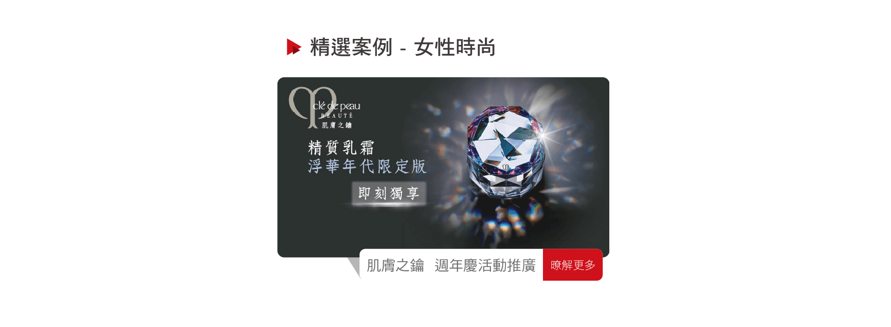

服務品牌
✨ 高端美妝品牌
💄 國際美妝品牌
🌹 國際美妝品牌
💅 日系美妝品牌
🧴 日系美妝品牌
🌸 高端護膚品牌
💫 日系護膚品牌
👗 國際服飾品牌
🎄 國際服飾品牌
高端美妝品牌 — 週年慶活動推廣

高端美妝品牌（Clé de Peau Beauté）週年慶期間，iFLocus 協助在全台主要百貨專櫃及高端購物中心場域，精準推播週年慶活動廣告。
- 鎖定信義區、忠孝東路、中山區等高端百貨場域
- 覆蓋競品美妝專櫃（SK-II、Estée Lauder 等）周邊
- 精準觸達高收入女性族群（月收入 5 萬以上）
- 週年慶期間專櫃業績較去年同期提升 45%
國際美妝品牌 — 行動招募活動
國際美妝品牌 直銷品牌透過 iFLocus 場域推播，在全台主要商圈、社區活動中心及上班族聚集場域推播美容顧問招募廣告。
- 鎖定 25–45 歲具消費力女性族群
- 在辦公大樓、購物中心等場域推播招募廣告
- 活動期間美容顧問詢問量提升 180%
- 成本效益遠優於傳統媒體招募
國際美妝品牌 — Genifique 活動宣傳
蘭蔻 Genifique 新品系列上市，iFLocus 協助在全台百貨公司、美妝連鎖通路等高端場域推播廣告，精準鎖定有美妝消費習慣的高端女性族群。
- 覆蓋 主要百貨通路等主力通路
- AI 分析歷史美妝消費者場域軌跡，精準再行銷
- 廣告點擊後購買轉換率達 6.8%
- 新品系列首月銷售超出目標 130%
iFLocus 如何協助女性時尚品牌
🏬
百貨場域精準覆蓋
覆蓋信義、忠孝、中山等高端購物商圈，精準觸達有消費力的目標族群。
💎
競品截客
在競品美妝品牌專櫃周邊推播廣告，有效攔截同質客群，提升市占率。
📊
消費者輪廓分析
透過 AiLocus 分析高端消費者場域軌跡，建立精準的品牌受眾輪廓。